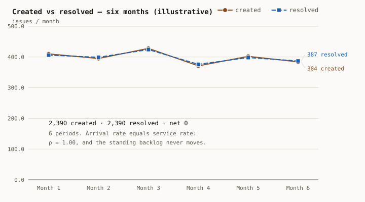
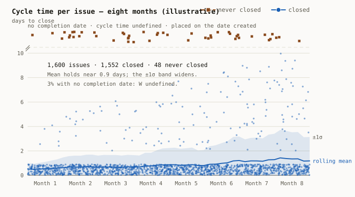
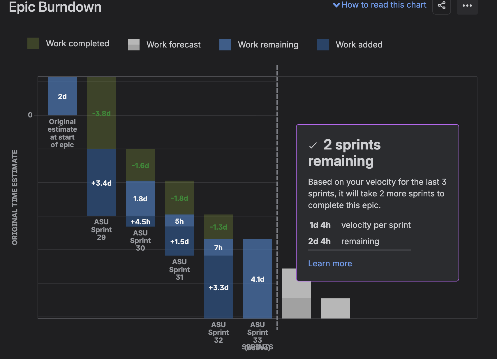

Part II – The Tools
A queue is an abstract data type. JIRA1 is one implementation.
Pushing an engineering team from 90% to 99% utilisation is a real ten-percent gain. It also makes everything wait eleven times longer.
Your process’s asymptotic complexity is bounded by your data structure.
Nobody cringes at the tool – they cringe at what was done to them with it: surveillance, telemetry for someone else’s dashboard, story points as a productivity metric. Real, widespread injury. But blaming JIRA for bad Agile is blaming the profiler for the slow code.
Practical consequence: the people who refuse the tool then have no evidence when they need it – which is how a backlog accumulates for years without anyone able to prove it is diverging.
Backlog in heads and Slack = unsorted list. O(n) to find the next item, traversed by a human under time pressure who stops at the first plausible match. Not a prioritised queue – a linear scan with an early exit. Properly configured Backlog ( say on JIRA ) = heap. O(log n) insert, O(1) peek2.
“The tool doesn’t matter, the process does” is the claim that the data structure doesn’t matter as long as the algorithm is good. No engineer believes that about code.
The CVR chart (a standard off the shelf instrument on JIRA ) plots created/resolved; slopes give () against service rate (). If ≥ 1 the queue diverges – grows without bound regardless of effort. So the backlog was never just “a big backlog” ( because it wasn’t visible on email threads ). It was an unstable queue that had been running a long time. Different diagnosis, different cure. Why “work harder™3” will always fail: it pushes , and cannot be increased indefinitely by asking the same people to “work harder™”. It cannot beat an unbounded . Root-causing sources is the only lever on .
As → 1, queue length → ∞. “We’re at ≥100% utilisation” and “our backlog is exploding” are the same sentence. Slack4 isn’t waste; it absorbs variance. For a standard queue, the expected number in the system is:
Which behaves like this:
| Business Reality | ||
|---|---|---|
| 0.50 | 1 | High slack, rapid response time, low feature thrash. |
| 0.80 | 4 | Healthy equilibrium. Predictable delivery, with room for variance. |
| 0.90 | 9 | Fragile. Minor interrupts trigger missed sprint commitments. |
| 0.95 | 19 | Systemic thrashing5. |
| 0.99 | 99 | “work harder™.” |
Thus going from to utilisation – what anyone would call a ( depending on absolute/relative ) efficiency gain – stretches the queue length . The relationship isn’t linear, it is hyperbolic, and it detonates as → 1.
Therefore the CVR chart proves a stability property, not an effort property and is the easiest signal to misinterpret. A rising resolved line looks like progress; it is only progress if it crosses the created line, and stays there, but with .
The figures below are illustrative. They are manufactured to the shape the instrument showed, because the originals belong to a former employer; the numbers are invented, the shape and the mechanism are the claim.

| Month | Created | Resolved |
|---|---|---|
| 1 | 410 | 406 |
| 2 | 395 | 399 |
| 3 | 428 | 424 |
| 4 | 371 | 376 |
| 5 | 402 | 398 |
| 6 | 384 | 387 |
| Six months | 2,390 | 2,390 |
Net zero. The two lines sit on top of each other for half a year while a large standing backlog neither grows nor drains.
That is the chart a diligence call is most likely to misread, because lines that track each other look like a team keeping up. It is in fact the signature of a system parked at the point where the formula above divides by zero – = 1.00, where has no finite value at all. Separation is the easy case. Anyone spots separation. This is the one that gets missed.
Queue depth is what converts the reading, and it is arithmetic anyone can do during the call. Inverting gives , so a standing queue of 1,200 implies ≈ 0.9992. Not “busy”. Not “at capacity”. Three nines ( ) of utilisation, sustained across quarters, by people who are being told to work harder™.
CVR answers exactly one question: is the queue stable? It says nothing about how long anything waited. For that, the Control Chart: cycle time per issue plotted against the date it completed, with a rolling average and a ±1σ band.
It matters for two reasons.
The first is Little’s Law. – the number of items in a system is the arrival rate times the time each one spends inside it. CVR supplies . The Control Chart supplies the observed , as cycle time or lead time depending on how the chart is configured. Without it, “we have 1,200 open issues” is a stock with no flow attached, and there is no way to distinguish a fast system carrying a large queue from a slow one carrying a small one.
The second is the band, which is the reason the chart beats the average it draws6. Illustrative again, eight months of a single queue:
| Cycle time | Issues | Share |
|---|---|---|
| Closed the same day | 1,408 | 88% |
| Two to ten days | 144 | 9% |
| Still open after eight months | 48 | 3% |

1,600 issues, arriving at about seven a day. Nearly nine in ten close inside a day, so the rolling average sits near a day and a half and every summary built on the mean reports a healthy system. The bottom three percent never close at all. Forty-eight issues with no completion date do not have a long cycle time – they have an undefined one, and a class of work whose W is unbounded has ≥ 1 all by itself, inside an organisation whose aggregate looks fine.
That is what a widening band shows and a flat mean hides: a system losing predictability while its average holds. The eighty-eight percent same-day is precisely what makes the tail invisible to the people reporting upward.
It is also the instrument to ask for on a diligence call, because it is the one nobody can manufacture the night before. Cycle time is computed from per-issue status-transition timestamps. A roadmap can be redrawn, a backlog can be groomed, a status report can be written in whatever shape its author prefers. A Control Chart is a by-product of how the team actually worked, recorded as it happened. Either the history is there or it is not, and either answer tells you something.
The measurements of the Sprints the “Velocity7” š, the Estimates ( Story Points8 / Effort, what ever is your flavour9 ) when recorded on the Issues enable an empirically measured quantity, say ê, which is now a measure of what is the error in the originals by the humans recording the ‘Estimates’.
Epics as a decomposition tree – the breakdown makes items estimable and, more importantly, exposes work that can’t justify itself once it is named. For example an Epic titled “UI improvements” is vague, but when broken down into specific stories like say “Add Loader post Submit” or “Capability to Add Discount Schemes to an Item”, work will either pop-up as justified or “Sales asked this last year → junk”.
Estimated and properly assorted Backlog will allow us to see an Epic / Version Report which forecasts a release date from observed ê, rather than PjMs plotting a Gantt chart creatively and expecting the Engineering to “work harder™”

Of course it forecasts a distribution ( completion is likely in a certain number of Sprints ), not a date. A forecast defensible with observed throughput is a categorically different object from a date negotiated10 in a room – and the difference shows the moment it slips.
Therefore š is empirically measured, not a target. The moment it becomes a target it stops measuring anything. Any observed values of š is in the right direction when → 0, or in that direction. š measures motion( a.k.a amplitude ), measures direction, ê measures quality of estimations, derived via the balance between Committed vs Delivered in a typical “Velocity Chart”.
Combine š and and you get the true vector11: Velocity. That is the difference between random motion and progress. Drive ê → 0 and the band narrows until the promise is worth making12.
Ungroomed backlog = memory leak. Unbounded growth of objects nothing references. Never fails loudly; degrades until every scan is expensive and nobody trusts the queue. Stale tickets aren’t clutter – they’re retained references.
A backlog everyone has stopped reading has already OOM’d.
The backlog depth was not a known quantity until the tooling made it one. Pages arriving by phone call, DM or tap on the shoulder are uninstrumented interrupts – they cost the pipeline exactly as much as a logged one and appear in no metric.
The first job of the tool isn’t organising work; it is making the work (planned/unplanned, scheduled/interrupt) visible. Everything Part III / IV does depends on that.
After a decade of tooling with custom states13, myriad workflows and fancy fields, I realised a tool configured with simple workflows, states & no custom fields is enough since a tool supplies no prioritisation judgement, only cheap execution of it.
A heap with a bad comparator is a fast machine for producing the wrong answer. The tool holds the queue; something still has to run the scheduler.
Say “JIRA” at a gathering of engineers and watch the room perform a small, synchronised flinch. It is the only word I know that reliably produces a physical response in people who have never met one another.↩︎
I once asked a VP what the top priority was. It took eleven minutes and required two other people to be summoned. That is not O(1). That is not even O(n). That is a distributed consensus protocol with a human quorum and no timeout.↩︎
work harder™ ≔ utilisation ≥ 100% ≔ ƒ( → 1, queue.length → ∞).↩︎
Slack = Idle capacity, not the application. The collision of terms is unfortunate, and entirely the application’s fault.↩︎
Backlog explodes; little capacity remains for planned work. Almost like choosing rent or food, and calling it efficiency.↩︎
In other words, is .↩︎
Most PjMs I’ve encountered thought Velocity is a scalar quantity in Effort / Issues / Story Points per Sprint.↩︎
Story points were invented so teams could estimate without committing to time. They are now used, almost universally, to commit teams to time. This is roughly what happened to the word “literally”, and about as reversible.↩︎
Potato / Potaato.↩︎
Nobody has ever been promoted for saying “somewhere between the 12th and the 26th, at eighty percent confidence”. This is a problem with promotion, not with forecasting.↩︎
Scrum’s Velocity should ideally just be called Speed.↩︎
→ 0 is a direction, not a destination. ê never reaches zero, and nothing ever ships precisely at 12/12/12, 12:12:12.1212 as promised on 11/11/11. The question was never what date. It was how wide.↩︎
Every organisation believes its workflow is uniquely complex and requires eleven states. Every organisation is wrong. Yours has four, and one of them is “Waiting for Abhinav”.↩︎